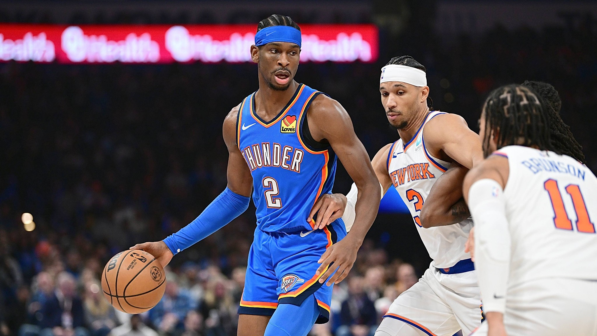
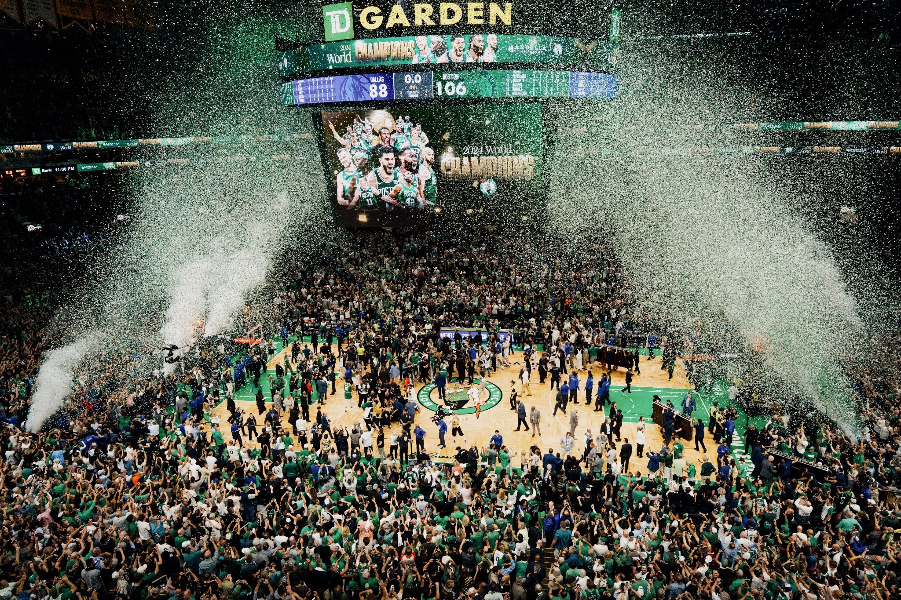
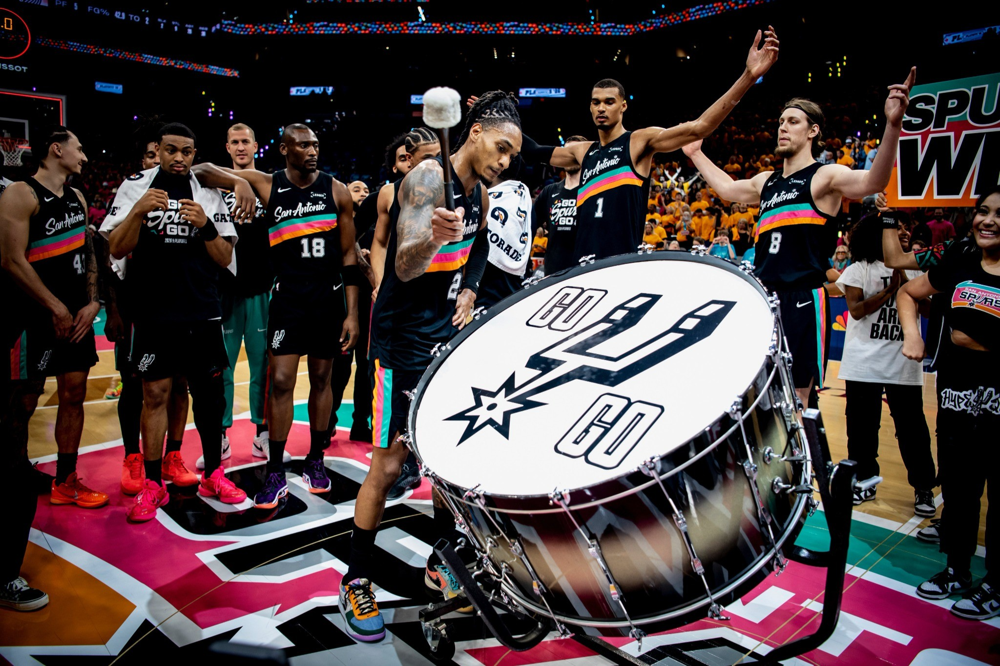

Admin Desk
Здесь меняется публичный контент COURTSIDE. Данные сохраняются в общей базе.
Редакция COURTSIDE.
Тексты и прогнозы
Статистика и Top 100 · GOAT Index
Каждая строка редактируется отдельно. Можно добавлять и удалять игроков. GI здесь является вашим редакционным показателем COURTSIDE.
Исторический GOAT Index
Новости
Для изображения новости можно указать URL. Для загрузки файла используй блок Photography ниже.
Медиатека COURTSIDE.
Теперь нет лимита в четыре фотографии. Загружай сколько угодно изображений, назначай их обложками, добавляй в галерею и удаляй прямо отсюда. Файлы хранятся в Supabase Storage.




Собери главную сам.
Меняй порядок блоков, скрывай их, редактируй заголовки и тексты, добавляй свои текстовые или фото-блоки. Для фотографий используй URL из Media Library.
Все остальные страницы.
Здесь можно менять заголовки, вступления и редакционные подписи GI, GOAT и статистики. Форум редактируется отдельным блоком ниже. Изменения сохраняются в Supabase и видны всем.
Форум.
Создавай и редактируй темы форума. Это редакционная лента обсуждений, поэтому ты полностью контролируешь её содержимое.
Если нужно перенести сайт.
Все данные находятся в Supabase, поэтому замена HTML-файлов на GitHub не удаляет контент. Главное не менять проект Supabase без необходимости.